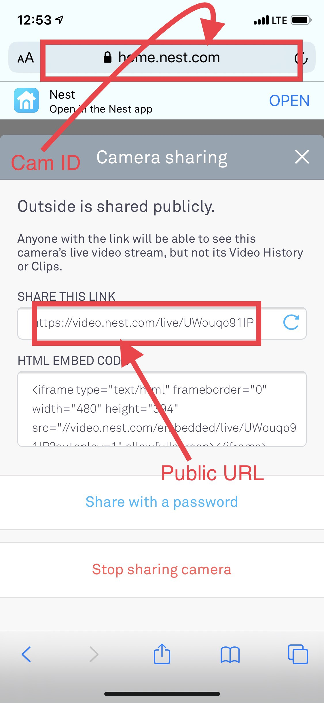

Instructions to add your Nest Cam:
- Once signed into our app, tap the “Add New Camera” button, then select “add a Nest Cam”
- To get your Nest Cam ID and public URL, open the Safari browser on your phone, go to home.nest.com and sign in using your Nest account.
- Tap on your desired Nest camera, tap on the settings button (the gear ⚙️ icon on top right corner), then scroll down to “Camera sharing” section. Tap on “Camera sharing” button and tap on “Share publicly”.
Then you should see the following page. Copy and paste your Cam ID and your public URL as shown below into the corresponding areas in our app and tap “Add”.